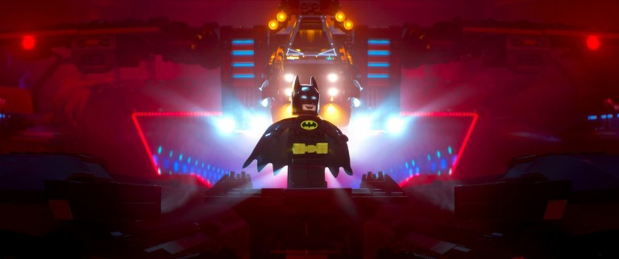

LEGO BATMAN İNCELEME – Hem Batman’i Hem De Joker’i Anlayan Bir Film Çekilebiliyormuş!
İtiraf ediyorum 2014’te gösterime giren LEGO filmi ilk duyurulduğunda iflah olmaz bir LEGO hayranı olmama rağmen oyuncak filmi fikrine şüphe ile yaklaşmıştım. Fakat bu beklentisizlikle izlediğim filmden sonra ilk düşüncem, elindeki materyalin özünü çok iyi anlayan bir ekibin elinden muhteşem bir filmi çıktığı yönündeydi. LEGO’yu, felsefesini, amacını anlayan bir ekibin elinde LEGO filmi çekme fikri “Meh oyuncak satmak için film yapmışlar”dan “özgün, iyi kotarılmış ve kendi tarzını oluşturan bir animasyon filmi” seviyesine gelmişti. Bu başarının tek sebebi de elindeki malzemeyi tanıyan tutkulu insanların işin arkasında olmasıydı.
İşte bu noktada LEGO Batman Movie’de selefinin hakkını fazlasıyla veriyor, söylemem gerek. Çünkü yaratıcı ekip bu sefer sadece LEGO’yu değil Batman’i de çok iyi anladıklarını ispatlamış. LEGO Batman bildiğimiz Batman’in bir parodisi evet. Ama Batman’in temel özellikleri üzerine farklı ve eğlenceli bir yorum olarak şekillendirilmesi yüzünden çok başarılı bir parodi aynı zamanda. Hatta parodi değil de ciddi ciddi Batman filmi çeken bazı sinemacıların anlayamadığı kadar iyi anladıkları için de iyi bir Batman filmi.
Çocukluk travmasının etkilerinden, yalnızlığına; Joker ile bağımlılık sayılabilecek ilişkisinden, kendine güvenen, karizmatik tavrına; aslında bir kahramandan çok kötü adama benzer kostümünden, fedakar karakterine, takıntılarına kadar Batman’i Batman yapan bir çok özellik LEGO Batman karakterinde mevcut. Sadece bunlar farklı ve mizah yüklü bir yorumla işlenmiş. Çok da iyi olmuş. Spoiler vermeden ancak şunu söyleyebilirim ki filmin ana hikaye arkı Batman ve Joker’in ilişkisi üzerine kurulu. Ve filmde “Suç mu Batman’i yarattı, Batman mi suçlulara ilham veriyor?” gibi derinlikli Batman ikilemleri de yer buluyor.

Errmm bir dakika Voldemort mu? Evet söylemeyi unuttum filmde sadece DC karakterleri değil Godzilla’dan Gremlinlere; Daleklerden, Matrix Ajanlarına onlarca kötü adam var ve hepsi çok eğlenceli. Bu kötüler Joker dışındaki DC suçlularından epey rol çalıyor ama filmin eğlencesi içerisinde bunu göz ardı etmek çok kolay. Çünkü boru değil, her yerinden orjinallik akan bir film var karşımızda. Bunu sağlayan en önemli şeylerden biri, LEGO markası elbette. LEGO’nun en kendine has tarafıdır lisansladığı tüm evrenlerden daha büyük bir çatı evren yaratabilmesi. Batman mi alır, Sauron mu sorusunun cevabı örneğin, bu evrende vardır.
Uzun lafın kısası: Film hem LEGO hem de Batman. LEGO’nun parçaları birleştirerek daha büyük bir bütün oluşturma mantığını; büyük bir amaç için birlikte çalışan insanlar veya minifigürler olarak bağlıyor ve bunun sırtında harika bir mesajla final yapıyor. Film dümdüz eğlenceli bir film olsa, şakasını yapıp perdenin arkasında kaybolsa bile kabul edilebilecekken, ekstra çabayı göstermiş. Kaynak materyallerini çok iyi anlayan ve hepsini iyi bir potada eritip, mükemmeliyeti başarabilen bir film! Gidin!